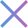
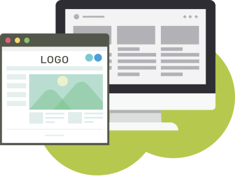

Mission
「人」を基点に新たな体験をデザインし心豊かなよりよい共創社会をつくる

Vision
UX専門の高付加価値デジタルクリエイター人材を1人でも多く育成・派遣することを通じてユーザーと企業と社会が心豊かになる新たな体験を形にする支援をする
UXリサーチスキルを中心とした
豊富な育成・研修プログラム
「いつでもどこでも気軽にユーザー評価」の実施を実現するためにUXリサーチに特化した独自の
育成・研修プログラムを構築し、UXリサーチを通じて課題解決を行うデジタルクリエイターが
継続的に学べる教育制度を実現します。
-
ユーザー評価実施に必要な ツール活用/調査設計/アウトプット に特化した独自研修プログラム
-
国内トップクラスの スキルフェロー制度の導入 と研修カリキュラムの充実
-
ディレクター/デザイナー/コーダーに関するレベル別の研修制度の導入も予定しており、UXリサーチスキルを保有するデジタルクリエイターとしてのベースも強化
UXリサーチスキルを保有するデジタルクリエイター常駐支援サービス
UXリサーチスキルを保有する
ハイブリット型クリエイター
ディレクター/デザイナー/コーダーのスキルに加え、UXリサーチスキルを保有するハイブリッド型デジタルクリエイター人材を正社員常駐型で提供

「いつでもどこでも気軽にユーザー評価」
ユーザー評価実施に使う豊富なツールが使い放題による「いつでもどこでも気軽にユーザー評価」の実施を実現
正社員型常駐支援ならではの
安定した供給力を実現
東証一部上場のメンバーズ社のグループ企業として発足したUX ONEは、UXリサーチスキルを保有するデジタルクリエイターを正社員として雇用し、お客様に提供いたします。有期雇用のリソース調達にありがちな離職リスクが格段に低いため、お客様には安心して業務をお任せいただけます。